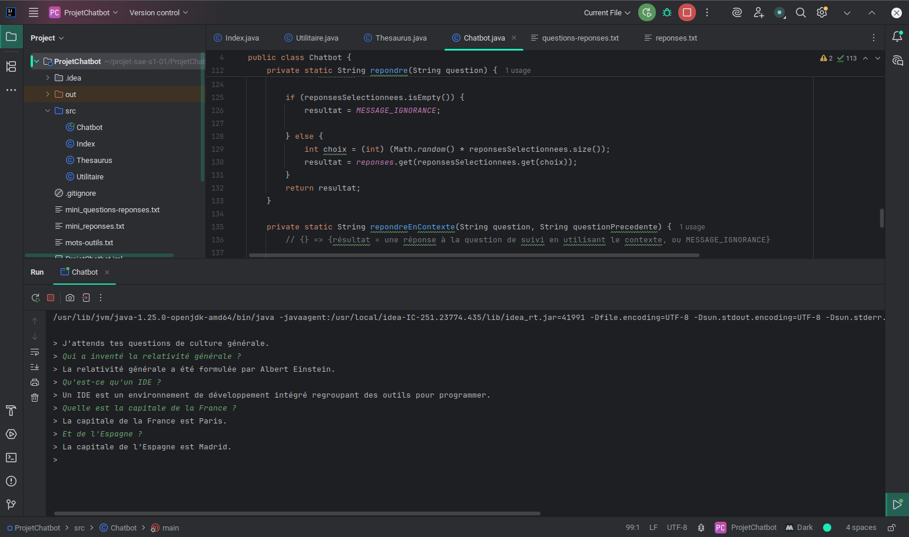

Projet de développement Backend - 2025-2026
Création d'un chatbot capable de répondre à des questions de culture générale avec un focus sur la fiabilité et la performance. Le projet compare différentes approches algorithmiques pour optimiser la vitesse de réponse.
Livrables :
Compétences :
Écran principal de l'application Java
